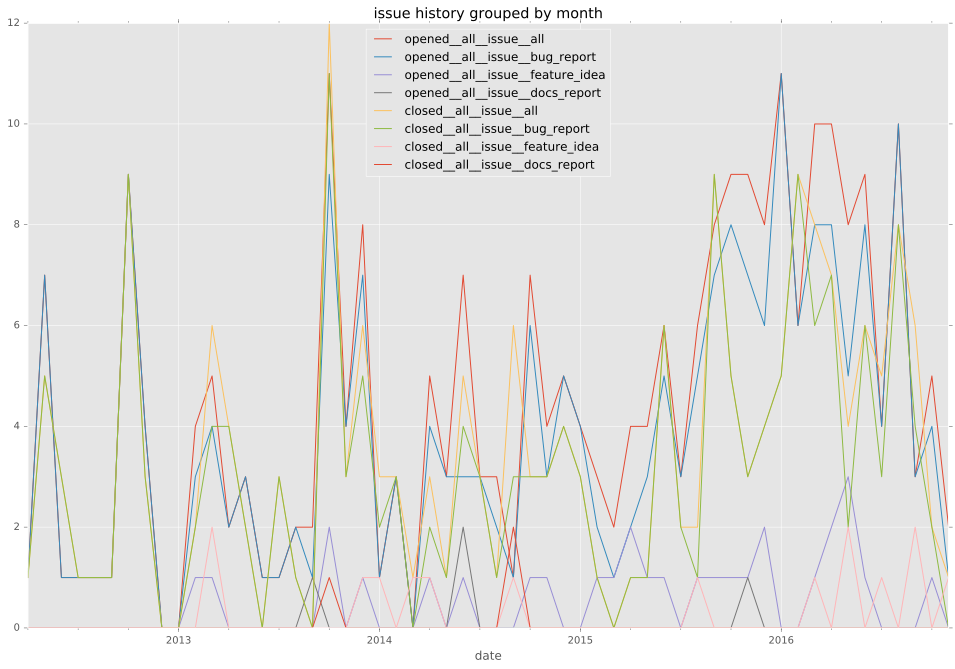
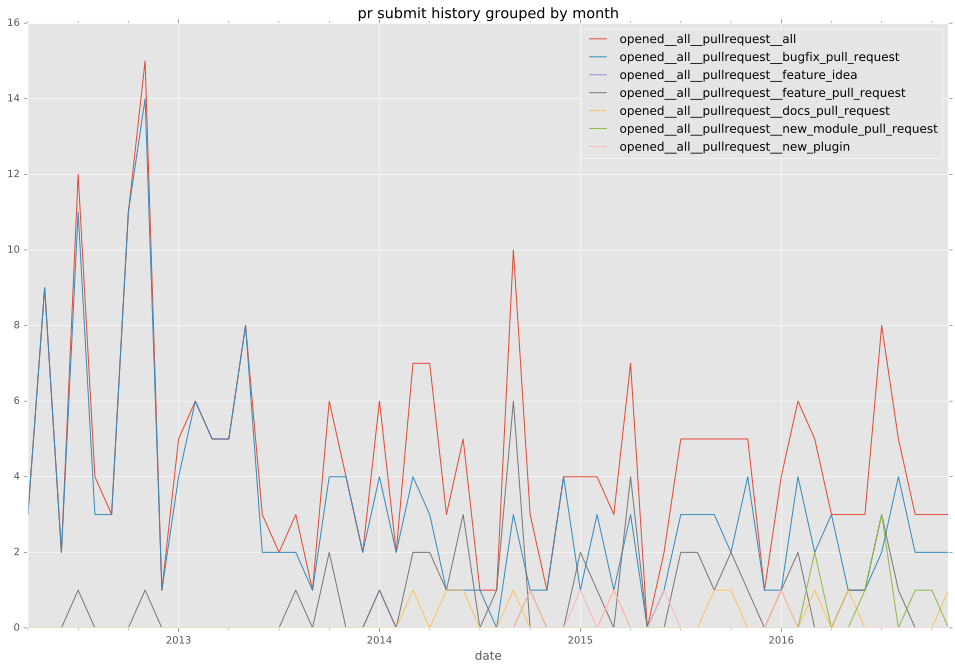

authors
- sfromm
maintainers
- ansible
contributors
- nigelm : 104 commits
- sfromm : 88 commits
- bcoca : 63 commits
- mpdehaan : 42 commits
- trbs : 39 commits
- jctanner : 29 commits
- mscherer : 21 commits
- romeotheriault : 19 commits
- jpmens : 17 commits
- markmaas : 11 commits
- 0x46616c6b : 11 commits
- srvg : 10 commits
- langemeijer : 10 commits
- aclindsa : 9 commits
- abadger : 9 commits
- jimi-c : 8 commits
- billwanjohi : 8 commits
- dhozac : 7 commits
- trendels : 6 commits
- larsengels : 5 commits
- dagwieers : 5 commits
- badpass : 5 commits
- nitzmahone : 3 commits
- mgedmin : 3 commits
- melodous : 3 commits
- lonerr : 3 commits
- gundalow : 3 commits
- rishid : 2 commits
- rgbj : 2 commits
- b6d : 2 commits
- yanc0 : 1 commits
- ubergeek42 : 1 commits
- tronner : 1 commits
- sean- : 1 commits
- pgeraghty : 1 commits
- moraleslevi : 1 commits
- mavit : 1 commits
- mavimo : 1 commits
- macbeth76 : 1 commits
- hernandesbsousa : 1 commits
- encbladexp : 1 commits
- domibarton : 1 commits
- dne : 1 commits
- defionscode : 1 commits
- candeira : 1 commits
- camandel : 1 commits
- boone : 1 commits
- bleader : 1 commits
- Jmainguy : 1 commits
total issue counts
unknown: 3
feature pull request: 20
docs report: 3
pullrequest: 152
docs pull request: 7
bugfix pull request: 120
feature idea: 19
issue: 121
new plugin: 1
bug report: 100
issue history

pullrequest history



days open by issue type
bugfix pull request
count: 193
std: 17.9780093193
min: 0
max: 148
median: 0.0
mean: 5.52849740933
all
count: 327
std: 91.63014836
min: 0
max: 767
median: 1.0
mean: 30.5321100917
pullrequest
count: 0
std: nan
min: nan
max: nan
median: nan
mean: nan
docs pull request
count: 12
std: 9.94949366764
min: 0
max: 35
median: 0.5
mean: 4.58333333333
docs report
count: 4
std: 345.572351325
min: 3
max: 699
median: 10.5
mean: 180.75
feature pull request
count: 20
std: 98.5106326081
min: 0
max: 301
median: 114.0
mean: 117.15
feature idea
count: 11
std: 163.228729646
min: 0
max: 501
median: 103.0
mean: 149.272727273
issue
count: 0
std: nan
min: nan
max: nan
median: nan
mean: nan
new plugin
count: 0
std: nan
min: nan
max: nan
median: nan
mean: nan
bug report
count: 82
std: 126.840780941
min: 0
max: 767
median: 2.0
mean: 50.6219512195
closures grouped by total days open